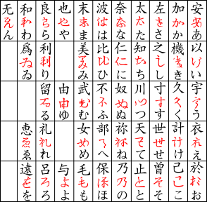
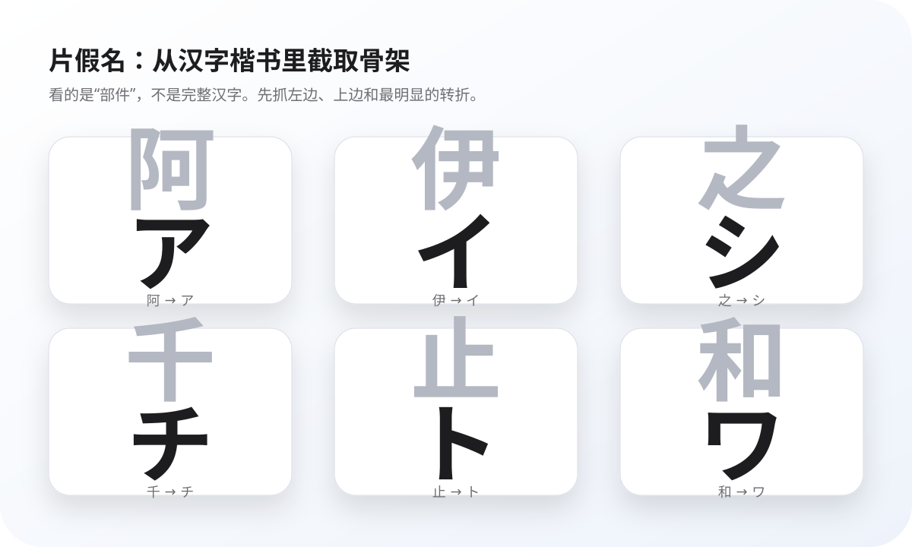

今日计划
基础假名 · 第 1 组
0%
Today
先复习薄弱项，再学习 5 个新假名，最后完成一组混合测试。每天几分钟即可继续推进。
Chart
点任意格子可以查看来源汉字、发音和记忆钩子。手机上默认就是大字优先。
Flash Cards
正面先逼自己想读音；背面再看罗马音、来源汉字和形状提示。
安写快了，收成あ。先看上方弯，再收尾。
如果你觉得字体里的草书还不够像，直接往下看演变总图，那里的中间态更接近真实字形来源。
Quiz
像 Real Kana / Kana Pro 那样高频回忆；答错会显示字源线索。
Progress
系统会根据答错次数与掌握状态自动整理薄弱项，并推荐最适合的下一组训练。
Keyboard Loop
适合电脑上快速刷：空格翻面；闪卡区用 A/S/D/F 或 J/K/L 做上一张、听音、记住、下一张；测验区可以用 A/S/D/F 或 1-4 选答案，/ 聚焦输入框。
Contrast
当你总在某几组字上出错，继续刷全表效率很低。这里把高频混淆字拆出来，专门对照看差异。
Origin
平假名看草书化的来源汉字；片假名看楷书汉字中被截取的部分。下面的演变图用来校正“草书中间态”的视觉记忆。

